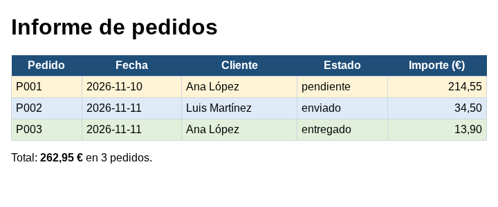

Inicio › UT5
Probador de XPath
Evalúa expresiones XPath 1.0 sobre el documento de pedidos con el motor del navegador.
Resultado…
Probador de XSLT
Edita la hoja XSLT (versión 1.0, la que implementa el navegador) y pulsa Transformar.
Con XSLT 3.0 (Saxon) se puede más
Agrupar, producir JSON o usar funciones nuevas necesita un procesador como Saxon, que no está en los navegadores. Resultado real de convertir el mismo documento a HTML con Saxon:

Descargas
Los navegadores están retirando su soporte nativo de XSLT; este sitio usa el polyfill xslt-polyfill (licencia BSD-3) para que el probador funcione en todos.
Más demos interactivas
- Probador de XPath — evalúa expresiones sobre tu propio XML.